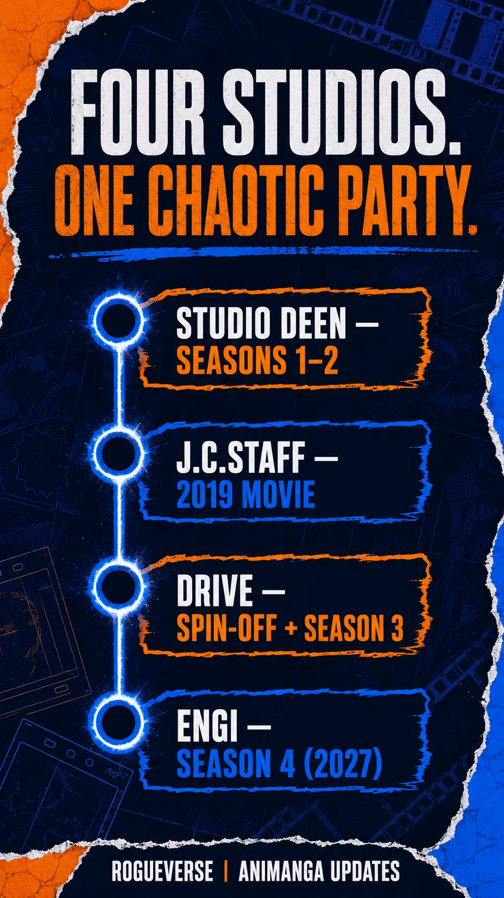

OLD MAN OTAKU / ANIME PRODUCTION • AUGUST 3, 2026
KonoSuba Changes Studios Again—But Its Comedic Brain Trust Is Staying
ENGI is taking over animation for KonoSuba Season 4, but most of the creative team responsible for the anime's chaotic identity is making the move with it.
KonoSuba Season 4 will arrive in 2027 with ENGI taking over animation production. The studio is changing, but most of the people responsible for the anime’s chaotic personality are not.
KonoSuba is preparing to send its famously dysfunctional adventuring party into another production studio.
During the anime’s 10th-anniversary event, “Colorful,” held July 26 at Pacifico Yokohama, the production committee confirmed that KonoSuba: God’s Blessing on This Wonderful World! Season 4 will broadcast in 2027. An “ultra teaser visual” accompanied the news, showing Kazuma, Aqua, Megumin and Darkness from behind as they look toward their next destination. Its message is simple: “Let’s set out on a new adventure.”
That new adventure will be animated by ENGI, replacing Drive, which produced the Megumin-focused spin-off An Explosion on This Wonderful World! and the main series’ third season. Predictably, the studio change immediately became the headline. It is an understandable concern for a comedy built around elastic expressions, precise reaction shots and performers who sound as if they are one bad decision away from starting a small war.
But “new studio” does not mean “entirely new KonoSuba.”
The more important production story is the amount of creative continuity surrounding the handoff. Takaomi Kanasaki remains chief director. Makoto Uezu returns to oversee series composition. Koichi Kikuta is back as character designer, Yoshikazu Iwanami remains sound director and Masato Kōda continues composing the music. The principal Japanese voice cast is also returning.
ENGI may be the new name on the production line, but much of KonoSuba’s comedic brain trust is making the trip.
What has officially been announced?
The July 26 reveal established a 2027 broadcast window, the principal staff, the animation studio and ten returning Japanese cast members. It did not provide a specific premiere month, episode count or full trailer.
The distinction between a teaser visual and a trailer matters here. A separate 10th-anniversary promotional video was released around the event, but that video celebrates the anime’s history using footage from previously released productions. It is not a preview of ENGI’s Season 4 animation. Until a proper promotional video arrives, no one outside the production can honestly judge how the new season moves, how its action is staged or how aggressively its faces will melt during an argument.
Season 4’s currently announced staff is led by Kanasaki as chief director and Manabu Kurihara as director. Uezu handles series composition, Kikuta handles character design, Iwanami directs the sound and Kōda returns for the score. ENGI is credited with animation production, while the KonoSuba 4 Production Committee is credited with producing the series.
The returning Japanese cast includes Jun Fukushima as Kazuma, Sora Amamiya as Aqua, Rie Takahashi as Megumin and Ai Kayano as Darkness. Sayuri Hara returns as Luna, Tetsu Inada as Ruffian, Ayaka Suwa as Chris, Yui Horie as Wiz, Masakazu Nishida as Vanir and Aki Toyosaki as Yunyun.
Kanon Takao, the voice of Iris, participated in the nighttime portion of the anniversary event, but Iris was not included in the initial Season 4 cast list. Her appearance in the new season may be likely, but it has not been formally confirmed through the current announcement.
How many times has KonoSuba changed studios?
The answer depends on whether we count only the main television seasons or every major animated production.
Studio DEEN established the television anime’s identity with Season 1 in 2016 and Season 2 in 2017. J.C.Staff then produced the 2019 theatrical film KonoSuba: God’s Blessing on This Wonderful World! Legend of Crimson. Drive took over for An Explosion on This Wonderful World! in 2023 and Season 3 in 2024. ENGI will now produce Season 4.
For the main television anime, this is the second studio change: DEEN to Drive, followed by Drive to ENGI. Across the larger franchise, ENGI becomes the fourth animation studio to handle a major KonoSuba production.
That history is unusual, but it also demonstrates that KonoSuba’s identity has never belonged exclusively to one building or corporate logo. The franchise survived the move from television to film, returned through a different studio for its spin-off and third season, and now faces another transition. Its consistency has depended heavily on key creative personnel moving with it.
Kanasaki is the clearest example.

He directed Seasons 1 and 2 and the Legend of Crimson movie. When Drive assumed animation duties, he stayed with the franchise as chief director for An Explosion on This Wonderful World! and Season 3. He will occupy that same senior role for Season 4.
That matters because KonoSuba’s comedy is not simply a collection of funny lines. It depends on rhythm: when a reaction is held, when the camera abandons dignity, when a heroic pose collapses and when four actors are allowed to shout over one another without destroying the joke. Kanasaki has helped establish that rhythm since 2016.
Who is new director Manabu Kurihara?
The most meaningful change on the creative side is Manabu Kurihara stepping into the director’s chair.
Kurihara previously directed The Detective Is Already Dead, another ENGI production, and has continued working within the studio’s production ecosystem, including episode-level work on Medalist. Season 4 will place him beneath Kanasaki’s chief direction while giving him responsibility for the day-to-day direction of the series.
That structure should temper both panic and overconfidence. Kanasaki’s continued involvement gives Kurihara access to someone who understands the franchise’s comic language, but a chief director and series director do not perform identical jobs. Kurihara’s decisions will still influence storyboards, pacing, episode construction and how the show balances its action with its deliberately undignified character acting.
The honest verdict must wait for footage and, ultimately, completed episodes. A familiar senior staff can preserve the blueprint; execution still depends on schedules, animation directors, episode directors, production assistants, freelancers and subcontractors who have not all been announced.
What kind of studio is ENGI?
ENGI was established in 2018 with backing from KADOKAWA, Sammy Corporation and Ultra Super Pictures. KADOKAWA is also the publisher of Natsume Akatsuki’s original KonoSuba light novels through the Kadokawa Sneaker Bunko imprint.
That corporate connection makes this less like an unrelated company walking in from the wilderness and more like the property moving deeper into KADOKAWA’s animation network. It does not automatically guarantee resources or quality. Anime production is far too complicated for a shared parent company to function as a magic spell. It does, however, mean ENGI is structurally familiar with KADOKAWA adaptations and the production environment surrounding its intellectual properties.
ENGI’s catalogue includes Uzaki-chan Wants to Hang Out!, The Detective Is Already Dead, Trapped in a Dating Sim: The World of Otome Games Is Tough for Mobs, Unnamed Memory, Gamera: Rebirth and Medalist.
Those projects display a wide range of results and production demands. Gamera: Rebirth leaned heavily into CG monster animation, while Medalist required expressive character performance and carefully staged skating sequences. Neither project proves exactly what ENGI will do with KonoSuba, but they demonstrate that the studio is not limited to one visual approach.
KonoSuba presents its own challenge. It does not need every frame to look expensive or perfectly polished. In fact, excessive stiffness in the pursuit of attractive drawings could work against the series. It needs characters who can look appealing in one shot and catastrophically foolish in the next. The best KonoSuba animation understands that going “off-model” can be a feature when the distortion is intentional, readable and timed to the performance.
That is why Kikuta’s return as character designer is important. He helped define the anime’s adaptation of Kurone Mishima’s original illustrations from the first season onward. His designs give animators a familiar foundation while leaving room for the exaggerated expressions that became part of the show’s identity.
What will Season 4 be about?
No light-novel volumes have been officially named in the Season 4 announcement. Any story forecast must therefore be labeled as informed speculation.
The adaptation pattern makes one forecast particularly strong. Season 1 adapted the first two main novels. Season 2 adapted Volumes 3 and 4. Legend of Crimson adapted Volume 5, and Season 3 continued with Volumes 6 and 7. If the anime maintains that pace, Season 4 will most likely cover Volumes 8 and 9.
That pairing would give the season two complementary identities: one driven by festivals, religious rivalry and criminal nonsense, followed by a more consequential conflict involving the Demon King’s army and Megumin’s history.
Volume 8 returns the action to Axel during its annual Eris Appreciation Festival. Naturally, Aqua cannot quietly endure a celebration centered on another goddess. The Axis Church becomes involved, plans for an Aqua festival begin competing with the existing event and Kazuma finds himself dragged into the resulting mess.
The premise is almost laboratory-designed for KonoSuba. Aqua wants recognition without possessing the judgment required to manage it. Kazuma sees opportunities for money and social leverage. Religious devotion becomes event planning, event planning becomes warfare and the citizens of Axel are once again forced to survive the main party’s help.
Volume 8 also continues Chris and Kazuma’s pursuit of dangerous divine items. Their activities lead toward another infiltration and a Sacred Treasure connected to a mysterious suit of armor. That material could give the season a mixture of festival comedy, stealth, fantasy parody and character development for Chris.
Volume 9 shifts the balance. The conflict with the Demon King’s army becomes more immediate when the capital faces a threat involving the general Wolbach. Megumin’s personal connection to the situation brings greater emotional weight without abandoning the series’ comedy.
This is where the 2023 spin-off may become especially valuable. An Explosion on This Wonderful World! explored Megumin’s life before she joined Kazuma’s party and introduced history that can strengthen the impact of later developments. Viewers who treated the spin-off as optional backstory may discover that it was also laying track for material expected in Season 4.
Again, none of this confirms that ENGI will adapt both books, adapt them at the same pace or avoid rearranging material. The production could include side stories, alter the volume split or reserve part of Volume 9 for another project. Until an official synopsis or trailer identifies the story, Volumes 8 and 9 remain the best-supported prediction rather than established fact.
Why the returning audio team matters
KonoSuba’s visuals receive most of the attention during a studio change, but its sound may be even more central to the comedy.
Iwanami’s return as sound director preserves the person responsible for shaping voice recording and the overall audio presentation. The main cast has spent years developing its chemistry: Fukushima’s Kazuma can move from exhausted realism to full-volume pettiness; Amamiya’s Aqua can turn divine authority into wounded outrage; Takahashi’s Megumin treats every explosion as theater; and Kayano’s Darkness can derail an otherwise ordinary conversation merely by sounding too enthusiastic about the wrong detail.
Their timing is a group performance. The cast knows how to interrupt, escalate and react to one another. Maintaining the same principal performers and sound director gives Season 4 a major form of continuity that cannot be seen in a teaser visual.
Kōda’s returning music performs a similar function. KonoSuba’s score can sell a fantasy quest with complete sincerity immediately before the characters expose themselves as frauds. That contrast is one of the show’s most dependable weapons. Familiar musical language helps a new production feel connected to what came before, even if aspects of the animation pipeline change.
What remains unconfirmed?
The 2027 window leaves several major questions unanswered.
There is no exact premiere date, broadcast season or episode count. The production has not said whether Season 4 will be a single cour, a split cour or another format. No theme-song performers have been announced. Machico has performed the opening themes for the previous television entries and appeared at the anniversary event, but her return for Season 4 should not be treated as official until a music announcement is made.
There is also no confirmed international streaming home. Crunchyroll streamed the previous seasons and the Megumin spin-off outside Asia, making it the obvious expectation for many viewers, but prior licensing does not equal a formal Season 4 announcement.
The English dub cast, production schedule and release timing are unknown. Additional Japanese cast members, supporting production staff and the precise adaptation material also remain unconfirmed.
Most importantly, there is no Season 4 animation footage. Claims that ENGI has already improved or damaged the series are conclusions without evidence. The first real trailer will provide clues about compositing, background art, action, expressions and general direction, but even promotional footage cannot fully reveal the health of a television production.
When that trailer arrives, the most revealing moments may not be its largest explosions. Watch how quickly the characters move between attractive model-sheet poses and deliberately ridiculous expressions. Look at whether group conversations feel staged around four distinct personalities instead of four stationary drawings. Listen for the pauses, overlapping complaints and sudden changes in volume that give the cast room to perform. Background density and action cuts will matter, but KonoSuba’s real production test is whether an ordinary argument in a guild hall still feels like an emergency. A trailer that understands that principle will tell fans more than a montage of polished magic effects ever could.
Should fans be worried?
Fans have a legitimate reason to watch the transition closely. Studio changes introduce uncertainty, and ENGI inherits a comedy whose apparent looseness is harder to reproduce than it looks. KonoSuba can survive limited animation when the staging and expressions are clever; it struggles if limited movement also becomes limited personality.
At the same time, the announcement contains more continuity than the headline suggests. Kanasaki is still supervising the franchise. Uezu remains responsible for structuring the adaptation. Kikuta preserves its character-design foundation. Iwanami and Kōda protect its sound and musical identity. The principal cast remains intact.
The studio badge changed. The people who understand why Aqua crying is sometimes funnier than an elaborate battle did not all disappear.
That makes cautious optimism the most reasonable position. ENGI has something to prove, especially under a new series director, but it is not being asked to reinvent KonoSuba alone. It is inheriting an established creative network and, if the source-material pattern holds, two novels capable of delivering both the franchise’s familiar chaos and a meaningful step forward for Megumin.
KonoSuba Season 4 will broadcast in 2027. Until actual footage arrives, its production quality remains an unanswered question. What can be said now is that the transition is more stable than a dramatic “another studio change” headline makes it appear.
Kazuma and his party are headed toward a new adventure, a new director and a new animation studio. Fortunately—or unfortunately for every innocent resident of Axel—they are bringing most of their old enablers with them.